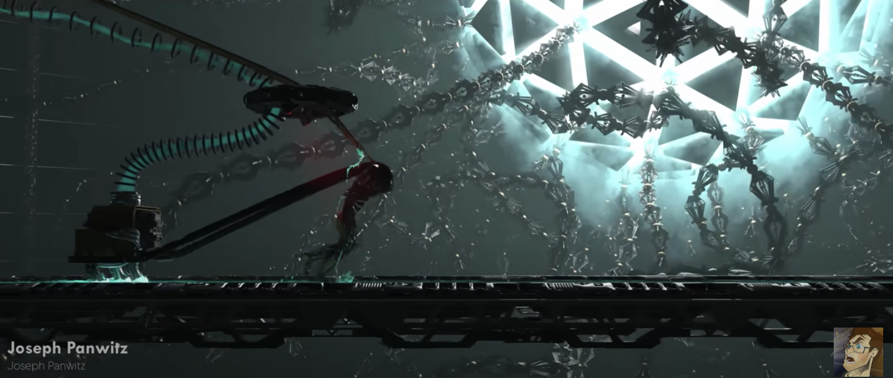
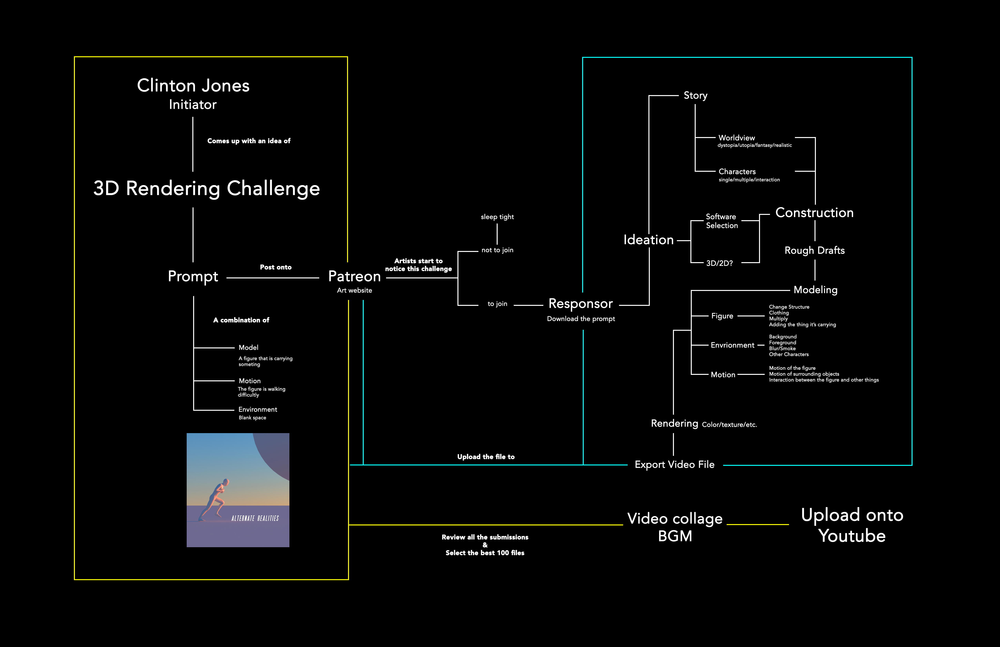
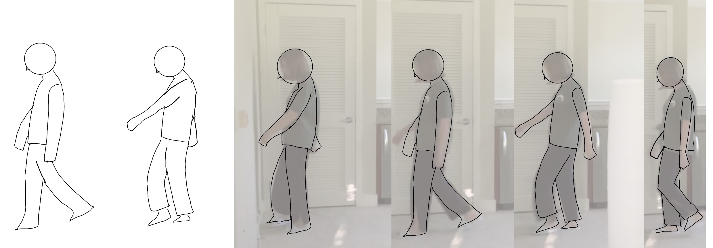
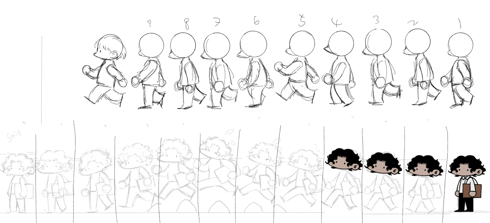

The "artifact" I found interesting was a CG challenge on Patreon. CG artist Clinton Jones posted a white model of a person walking, and asked the other artists to come up with their own renders based on the white model. He collected the best 100 renders and posted the video on his youtube channel. The video then went viral in the whole world.
Starting Point

System Diagram

When I drew the System Diagram I saw the project as a combination of two parts. The first part was a challenge initiated by Clinton Jones. I tried to think through his ideas and put together a flow chart for recruiting artists. The second part was the response from artists. I considered the process of making 3D Rendering from the artist's perspective and created the second part. Finally, I merged the two parts into one system diagram.
Animation Prototype

 |
 |
|---|
Prototype
I use myself as a model to create animation for the first prototype. I recorded my walking movement and trace them, then print on a piece of cardboard to create the zoetrope.
Revisement

To make the animation more fluent. I'm re-drawing each slides into a more cartoon style. I also prepared adafruit motors to assemble after the animation drawing complete.